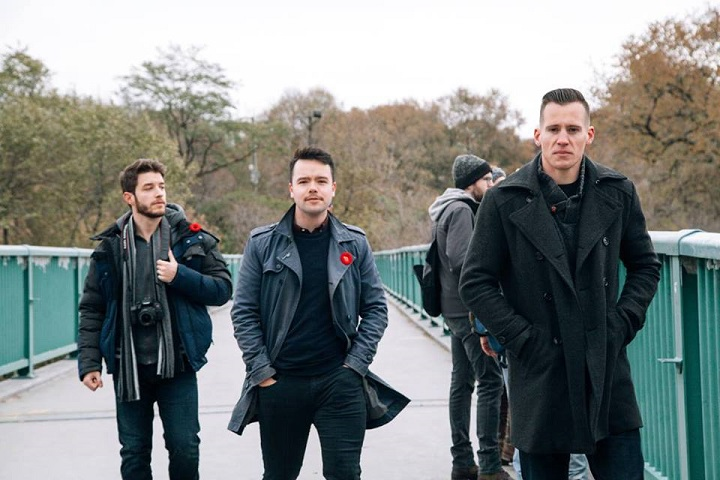

SWC - Suing CBC for Not Capitalizing White, in White People
May 4th, 2021
Well, Students for Western Civilization is at it again. I covered them at least once previously, where they were getting a White Students Union up and running at McGill University. The McGill Students Union was trying to put the kibosh on the whole thing. I wrote about who those people were here. Just the visual difference between George Hutcheson above and this tranny trying to stop him below.

It goes by "Brooklyn" Frizzle.
I mean sometimes a picture shows a thousand words...
Actually I would highly recommend you read that article, goy. It may very well be in my top 5 articles ever written, because those people are so ridiculous. To quote from myself.
TDC_ARTICLE_START
Folks, this is what we're up against trying to get into McGill. Some Brown girl who wants our cocks, a tranny with AIDS, and then some girl who walks around in an ugly Christmas Sweater all year round who's self-described main passions are her cat and eating ice cream.
I think we got this.
TDC_ARTICLE_STOP

But that's neither here nor there. What's important is that SWC does great work, fighting the good fight. I'm not gonna quibble over the kinda stupid "I prefer to be called European," bit, that's okay.
It's so nice and refreshing to see. What was neither nice, nor refreshing to see was these two shills in the comments section.
This is Anglin-tier behaviour. What they do is go around to anything remotely positive, and pretend that it's all fake and a honeypot. I included the comments they were responding to so you can see the behaviour more clearly.
Now, I can't possibly vouch for George Hutcheson myself, I've never met him. What I can say beyond any reasonable doubt, is that they have in fact sued CBC before, as well as Facebook. Hutcheson himself comments on this video, with a link to the ongoing action against Facebook, which he shouldn't have to do, but the purpose of these enemies is to sow Fear, Uncertainty, and Doubt.
SWC's other videos on the channel are great. They've documented just how absurdly hard it really is for White People to file Human Rights Complaints, and have those complaints taken seriously by the (((Human Rights Tribunals))), despite having the letter of the law on your side.
It's great stuff. Hutcheson is basically what "Good Optics," AmNat faggots would be... if they actually had good optics. The guy looks like a leader, his rhetoric is sharp and on the point, and he can't be caricatured as something silly by the Propaganda. Everyone who reads this needs to go over and sign the petition ASAP.
Link to the petition to sign here. Do it now you faggot.
However, don't bother with the "would you like to chip in," screen. That's Change.org getting money, not SWC. So don't give them anything.